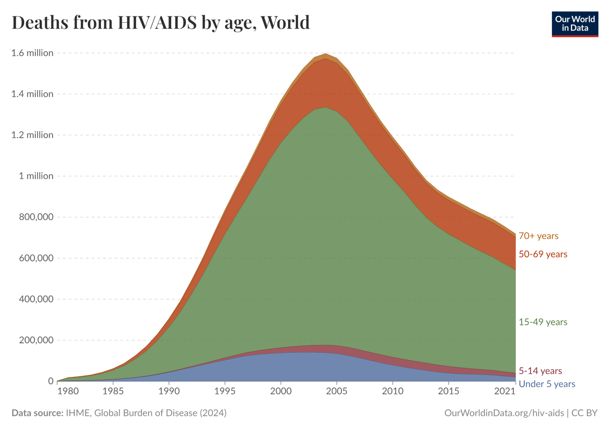

Executive Summary
The Trump administration has expressed serious skepticism of foreign aid, including pausing many programs for review, and challenging all programs to demonstrate they fit into an “America First” philosophy of aid. When the State Department announced a stop-work order on most foreign assistance, they shuttered PEPFAR clinics; after two weeks of intense bipartisan lobbying, the State Department issued waivers that allowed many PEPFAR programs to continue. This tug-of-war put PEPFAR back in the national spotlight, and it became clear that many Americans aren’t sure why we’re doing HIV/AIDS work, who specifically it helps, how much it costs or how seriously to take eye-popping headline claims like that PEPFAR’s work has saved 25 million lives, mainly women and children, on an annual budget of just $6.5 billion - 0.1% of the federal budget.
The President’s Emergency Plan For AIDS Relief (PEPFAR) began in 2004 as an integrated plan to fight AIDS under the control of the State Department, ending the inefficient practice of USAID and State and various NGOs all running their own independent programs with no meaningful accountability. Bush pushed for clear metrics and real results, and since then Congress has reauthorized PEPFAR four times in recognition of that success, sometimes unanimously. One of PEPFAR’s metrics is 90-90-90: 90% of people living with HIV know it, 90% of those who know it are receiving treatment, and 90% of those receiving treatment have viral suppression, meaning that they can’t pass on AIDS to their loved ones or babies. That’s been achieved in twelve countries, and partially as a result of PEPFAR, deaths from AIDS and new infections are falling.
The authors of this document are skeptical people, who are on the record for calling out inefficient NGOs and government spending efforts under both Republican and Democratic administrations, while praising programs that deliver value for America’s investment. We decided to look at PEPFAR with that skeptical eye. Here’s what we found:
- PEPFAR spends most of its money on treatment and prevention of HIV/AIDS
Oversight of PEPFAR is provided by the Office of the Inspectors General, and for this report we read three of their recent reports from audits of PEPFAR program recipients. Extremely good accounting controls are required, and every expenditure must be documented and demonstrated to be in line with program requirements. The three audits we reviewed found undocumented expense rates ranging from 0% to 2% of program expenses, and demanded repayment of every dollar unaccounted for.
- AIDS in Africa doesn’t look like AIDS in the United States
In America, AIDS cases have primarily been among men who engage in homosexual sex and disproportionately among users of hard drugs, spurring claims it’s a ‘lifestyle disease.’ But in sub-Saharan Africa, most people living with AIDS are women, and a substantial fraction are children who were born with it. The reasons why are debated; the fact itself is extremely well-demonstrated. Behavioral interventions, including abstinence, might help some people. But it’s not going to be sufficient to end AIDS.
- Americans will suffer if HIV spreads uncontrollably
Infectious disease can spread internationally when people, animals, and goods spread internationally. We’ve witnessed the resurgence of previously eradicated diseases such as tuberculosis in the US due to lack of access to treatment and prevention measures abroad. It’s much cheaper to pay nurses in Uganda and Botswana than in America, and the fewer people have HIV, the less we spend. We’ve also made a commitment that the Americans will help, and a sudden withdrawal at best leaves room for Chinese influence, at worst causes disorder that allows violent terrorist groups to emerge. On Feb 5, 2019, at the State of the Union Address, President Donald Trump announced an intention to end the US HIV epidemic by reducing new infections by 75% within 5 years and by 90% within 10 years. But that success can’t be maintained if Americans can get HIV abroad.
- PEPFAR isn’t going to end quickly, but it is on a positive pathway
We’re winning the war on AIDS. New cases are declining, deaths are declining, and PEPFAR has been a serious contributor to both. One of America’s greatest public health achievements was eradicating smallpox, and our turning the tide in the fight against AIDS deserves to be mentioned alongside it. In the shorter term, PEPFAR is successfully handing off responsibilities and costs to partner nations that are paying a greater share of the total work. Botswana received $57 million dollars in 2016 for HIV, but in 2024 received just $20 million dollars from the United States. It has made up the gap with its own health spending and achieved exceptional results, but still relies on the implementation infrastructure PEPFAR has built up. We did the hard work of establishing the program.
- Most importantly, PEPFAR is cost-effective, saving lives for between $1,000-$3,000 by our estimates
Our analysis finds that PEPFAR's core interventions remain highly cost-effective by global health standards. By comparing mortality in PEPFAR countries to mortality in matched non-PEPFAR countries, we estimate that PEPFAR saves lives at a cost of approximately $3,000 per death averted. If we credit PEPFAR for the leading role in driving the costs of HIV medications down from $1,000 a month to $60 a month, then its impact is far larger. The program has also generated positive spillover effects, strengthening health systems abroad so that they can take care of more disease outbreaks.
As the Trump Administration has a clear ambition to refocus American foreign aid on clearly measurable, direct, time-limited impact rather than funding the nonprofit sector indefinitely, PEPFAR could be a clear and specific example of “what good looks like.” Building on the clear, transparent, and explicit goals that PEPFAR has integrated into its approach from the start, we recommend a graduated approach to program evolution. Rather than categorical funding cuts or indefinite continuation of current arrangements, the State Department should implement country-specific transition plans based on clear metrics of partner government capacity and health system readiness. This would preserve PEPFAR's core achievements while preventing local backsliding on America’s achievements and more efficient use of U.S. resources.
Intro
PEPFAR is a federal program established by President George W. Bush to prevent, treat, and end HIV/AIDS in the developing world. It currently provides antiretroviral medication, the primary treatment for HIV/AIDS, to 20.6 million people, as well as providing screening and prophylaxis. (source) Since PEPFAR was established, both new HIV infections and deaths from HIV have fallen dramatically.
PEPFAR long enjoyed strong bipartisan support - its 2019 renewal passed by voice vote. But in 2024 it was renewed for only one year, and the 2025 renewal fight is expected to be contentious.
The State Department has estimated that PEPFAR has saved 26 million lives, but many people are skeptical of eye-popping claims about lives saved without corresponding program details: how do we know how our money is being spent? Are we encouraging risky behavior? This report digs into those questions.
Our key findings: When you compare countries with PEPFAR to countries without PEPFAR, deaths fall a lot faster with PEPFAR - and studies suggest this effect is causal, not a coincidence. And by contributing to making HIV drugs 10x to 20x cheaper, PEPFAR probably indirectly saved a huge number of lives beyond the program beneficiaries. But even if you just look at the program beneficiaries, being on PEPFAR-provided antiretrovirals drops their mortality by at least half, and therefore saves 20 million lives. Most new HIV patients in Africa are women, and many are children. PEPFAR partners are routinely audited by the U.S. government, the three audits we reviewed found rates of misuse of funds of between 0% and 2%. Handing off PEPFAR to local partners has been a priority since at least 2022, and in many countries the U.S. is in the middle of successfully scaling down our funding and role. Overall, under assumptions that can easily be substantiated with public data PEPFAR is highly cost-effective and making significant progress against a disease that poses serious risks to Americans and non-Americans alike.
Some PEPFAR programs are on pause right now, and all of them will end in a few months if Congress does not reauthorize the program. Our intent with this report is to lay out the evidence on PEPFAR and inform the debate over reauthorization.
Background (default collapsed)
What is HIV/AIDS?
Human immunodeficiency virus (HIV) is a virus which attacks the human immune system, particularly CD4+ T cells. CD4+ T cells orchestrate and regulate the immune response, making them a critical part of fighting infections.
When HIV kills off enough T cells, HIV infection progresses to acquired immunodeficiency syndrome (AIDS). In AIDS, with few T-cells, individuals are left vulnerable to infections that do not usually cause disease, called opportunistic infections. Most people are constantly exposed to bacteria, viruses and parasites that pose no threat to a person with a functioning immune system, but that can quickly be lethal to a person who can’t mount an immune response. Nearly all deaths of AIDS are deaths of such ‘opportunistic infections.’
People with HIV who don’t receive treatment can take up to ten years to progress to having AIDS. In this time, called the latency period, they may have few symptoms. Once a person has AIDS, they generally die within two years without treatment. Babies are more vulnerable than adults: without treatment, more than half of babies who have contracted HIV die before they turn two.
How much of a problem is HIV/AIDS?
About 40 million people have HIV, about two thirds of whom live in sub-Saharan Africa: almost all of the remainder live in the Asia-Pacific region. In 2023, an estimated 630,000 people died of HIV/AIDS, which is about 1% of the world’s deaths from all causes. 521,000 of the people who died of HIV/AIDS lived in sub-Saharan Africa – 5.4% of all deaths. That’s more than the number of people in the United States who died of HIV/AIDS, dementia, diabetes, drug use, suicide, and homicide–combined.
About 2 million (or about 7%) of worldwide HIV cases are children.
HIV used to be much more of a problem. From 1981 to 1996, there were no treatments that were effective enough to slow the progression to AIDS. When deaths peaked in the US, over 40,000 people were dying from AIDS every year. With treatment in 2022, that number was only 4,243 (https://stacks.cdc.gov/view/cdc/156509, table 11b).
“We would see grandparents, and grandchildren, and the intervening generation was just gone” –Michael Gerson, former Chief Speechwriter for George W. Bush.
How do people catch HIV?
HIV is transmitted:
- From mother to child, primarily during pregnancy, childbirth, and breastfeeding.
- Through sexual contact.
- In sub-Saharan Africa, most people living with HIV are women, most of whom got HIV through heterosexual sex – a stark difference from the United States, where two thirds of HIV cases are men who engage in homosexual sex.
- It is easier to transmit HIV through sexual intercourse from a man to a woman than from a woman to a man, so all things equal heterosexual women are at higher risk of HIV than heterosexual men.
- Through unsafe injection practices, whether from drug use or unsafe medical care.
- Through occupational accidents, when healthcare workers and first responders come into contact with blood or fluids from an HIV+ person through broken skin. In some studies in PEPFAR recipient countries, up to 40% of healthcare workers report occupational exposure to HIV infected fluids or needles (though less than 1% of such exposures cause an infection, and such infections are hard to trace accurately.)
How is HIV treated?
Antiretroviral therapy, or ART, is the primary treatment for HIV. It involves administering drugs known as antiretrovirals, which prevent the virus from replicating. This reduces a patient’s viral load (the amount of virus present in their blood) and slows the progress of the disease. There are several different antiretroviral drugs available, and most patients take a combination of medications in the form of 1-4 pills per day. For most patients, six months of antiretroviral therapy can reduce their viral load to undetectable levels, though the therapy needs to continue indefinitely to keep the virus in check. A patient with an undetectable viral load can’t transmit HIV.
From 1984 until 2004, global deaths from HIV rose rapidly, from around 2,000 in 1980 to 1.6 million in 2004. In the early 2000s, antiretrovirals began to turn the tide of HIV deaths in rich countries, but at that time such treatments were impossible to access in Africa. PEPFAR not only brought HIV treatment to Africa but also made it relatively affordable, even for developing-country governments. As of 2023, among all people who have HIV worldwide:
- 86% are aware of their status.
- 77% are receiving antiretroviral therapy.
- 72% have suppressed viral loads.
As a result, global deaths from HIV have been falling since their peak in 2004.

(source: https://ourworldindata.org/hiv-aids)
How does antiretroviral therapy save lives?
It dramatically reduces deaths from HIV
Antiretroviral therapy reduces the morbidity (health impact) and mortality (death rate) of HIV. In the 1990s, the life expectancy gap between people with and people without HIV was 44.3 years; in 2011, the life expectancy gap between patients receiving antiretrovirals and people without HIV was only 7.9 years.
Patients receiving antiretroviral therapy are less susceptible to tuberculosis and other opportunistic infections and cancers, which are common causes of death from HIV. People living with HIV are also susceptible to heart, kidney, and neurological problems, and antiretroviral therapy reduces the incidence of these issues.
It prevents people with HIV from infecting others
When a person with HIV consistently takes antiretrovirals, their viral load can be reduced to undetectably low levels. According to the Center for Disease Control, a person with an undetectable viral load cannot transmit HIV to their sexual partners. Having an undetectable viral load also reduces the risk of perinatal (mother-to-baby) HIV transmission during pregnancy, childbirth, and breastfeeding to less than 1%. As a result, treating one person with ART can prevent multiple other people, including babies, from ever being infected.
It keeps people from contracting HIV in the first place
Antiretrovirals are also helpful for those who are at risk of contracting HIV, or know they have been exposed to HIV.
A person at risk of contracting HIV (for example, someone in a stable relationship with a HIV+ partner) can also take antiretrovirals to prevent themselves from being infected with HIV. This is known as pre-exposure prophylaxis or PrEP. As of 2015, the WHO recommends that PrEP be offered as an additional choice to people at risk. PEPFAR has delivered on this recommendation, providing PrEP to 2.5 million people in 2024. Over 90% of people who started taking PrEP got their first dose from PEPFAR.
Individuals who have high risk exposures to HIV who are not on PrEP can also be prescribed post exposure prophylaxis (PEP). Once someone has already been exposed to HIV, such as through unprotected sex with an HIV+ person, PEP can keep them from contracting HIV. PEPFAR provides post-exposure prophylaxis in some areas, and considers PEP an essential component of occupational health and post-rape care.
Why is it specifically dangerous to interrupt ART treatment?
One of the main weaknesses of antiretroviral therapy is drug resistance: HIV is a virus and can evolve to become resistant to drugs. One of the major contributors to drug resistance is interruptions to treatment, typically caused by access issues. When ART is consistently accessible, a majority of patients in sub-Saharan Africa take their medication consistently. Inconsistent treatment access exposes the virus to antiretrovirals enough to push it to evolve resistance inside a given patient, while leaving the patient capable of transmitting the resistant strain to others, and substantially increases risk of death and other infections.
Any disruption to PEPFAR’s operations could cause these disruptions to access, giving the virus an opportunity to evolve resistance in the affected patients. The enzymes responsible for HIV replication are significantly error-prone, creating tens of thousands of mutations per day in an untreated individual. Certain mutations create resistance to various antiretroviral medications, and those viral particles have an advantage in reproducing when treatment resumes. Preventing replication wherever possible gives fewer opportunities for these critical mutations to occur and hinder the efficacy of drugs that have already been developed.
In addition to the increased risk of health complications for the individual and transmission of resistant strains to others, there are significant costs associated with HIV drug resistance. Second-line, third-line and combined HIV drug regimens which combat drug resistant strains are more expensive than first-line treatments. In high income countries, second line treatments are nearly 9x as expensive as first line treatments. It is estimated that HIV drug resistance will cost 5.0-6.5 billion USD by 2030 in increased antiretroviral cost alone.
Viruses don’t care about borders. Drug-resistant strains of HIV which evolved abroad would pose a threat to vulnerable people in the United States. It is estimated that 7-9% of new HIV infections, or 170,000 new infections in 2021, are attributable to HIV drug resistance. Our safety depends on reliable access to antiretroviral medications abroad.
A brief history of PEPFAR
In January 2003, then-President George W. Bush proposed The President’s Emergency Plan for AIDS Relief, or PEPFAR, which was established via a bipartisan law in May of that same year, to address how HIV and AIDS was still a “death sentence” in sub-Saharan Africa. This proposal captured the imagination of the Western world and the US Congress, gathering together a broad base of advocates ranging from U2’s Bono to arch-conservative US Senator Jesse Helms.
When announced, many economists thought it would not be cost-effective to treat AIDS, but they were wrong. This initial concern was understandable. When PEPFAR began in 2004, first-line ART cost about $1,000 per year, so treating everyone with HIV would cost tens of billions of dollars. Many experts worried that PEPFAR would lead to funding cuts for other highly cost-effective aid efforts. But the pessimistic forecasts didn’t come true. First, the Bush Administration decided to fund PEPFAR on top of existing aid efforts, expanding the pie instead of forcing aid efforts to compete for shares of it. Second, the massive increase in funding for ART drugs created a price signal that drove competition and innovation, and supercharged an existing race for developing cheaper, more effective generic drugs. Today, a year of first-line ARV medication costs about $60 while screening, monitoring, and other healthcare costs add only $40.
PEPFAR has been through several changes in its 20 years of existence. Changes include more focus on pediatric HIV and mother to child transition, embracing PrEP, more robust monitoring (PEPFAR stewardship and oversight act of 2013)
PEPFAR has been through several changes in its 20 years of existence. The first phase of PEPFAR, which took place over five years, had three main goals: preventing 7 million new HIV infections, treating 2 million people with HIV, and caring for 10 million people affected by HIV (including preventing mother-to-child transmission during pregnancy). Over time, PEPFAR has grown to address pediatric HIV and mother-to-child transmission, expanded its capabilities for monitoring aid delivery and progress against targets, and, most recently, began deploying PrEP into partner countries.
Currently, PEPFAR aims to reach "global 95-95-95 treatment targets": that is, 95% of people with HIV are aware of their HIV status, 95% of people diagnosed with HIV will receive antiretroviral therapy, and 95% of people who receive antiretroviral therapy will achieve viral suppression. This has placed an important goal in sight for PEPFAR: ending HIV’s pandemic status by 2030.
This goal is in sight in large part because first-line ARV medications have gotten dramatically cheaper over time, while new infections have also declined. As a result of these two trends, it has become easier for local governments to shoulder the burden of HIV treatment. Beginning in 2009, when PEPFAR was reauthorized under the bipartisan Lantos-Hyde Act, PEPFAR has prioritized gradually handing off its responsibilities to local governments. In many partner countries, the United States has negotiated the transition of HIV treatment responsibilities to local governments. Botswana, for example, received $57 million in funding from PEPFAR in 2016. Since then, Botswana has increased its health spending as part of a multi-year transition plan. In 2024, it only received $20 million from PEPFAR. Rwanda has seen a similar trend, dropping from $56 million in 2016 down to $20 million in 2024 also as a result of a transition plan. South Africa has had a very successful transition to almost entirely self-funding its work.
To be clear, not all PEPFAR recipient countries are on track for that graceful transition to full local funding. The transition has been much rockier in Nigeria, for example, but there is still progress. In some, the U.S. remains by far the predominant funder; in others, U.S. commitments have increased over time.
However, the program is generally seen as successful, and has spent most of its existence as a relatively uncontroversial, bipartisan program. Notably, the 2019 reauthorization passed by voice vote in the House and by unanimous consent in the Senate. (This means that in both chambers, there was broad support and no meaningful opposition to the program.)
Overall, PEPFAR has been reauthorized by Congress four times. While the first three reauthorizations were for five years each, in the most recent reauthorization, in 2024, Congress extended PEPFAR only for one year. PEPFAR is run through the US Department of State; by law, it is overseen by the U.S. Global AIDS Coordinator, a Senate-confirmed role that reports directly to the U.S. Secretary of State (Marco Rubio).
Since taking office, the Trump Administration has expressed serious scrutiny of existing foreign aid expenditures in general: it worries that foreign aid is often distributed in a way that is not aligned with American interests and values. When the State Department paused most foreign aid spending on January 24th to evaluate whether the spending fit in with the administration’s America First goals, it shuttered PEPFAR clinics. After two weeks of intense lobbying from Republicans and Democrats alike, the State Department issued waivers that allowed many PEPFAR programs to continue.
As of February 1st, PEPFAR’s core programs - providing antiretrovirals to people with HIV, preventing mother-to-baby transmission, and screening for HIV - are running, but their future is in serious doubt. Other PEPFAR programs, particularly pre-exposure prophylaxis or PrEP, are currently paused.
How well does PEPFAR work?
- PEPFAR claims to have saved 25 million lives. That would be $XX per life, or a cost of $4 per American citizen. Is that number accurate?
- There are a few ways we can check. First – diff in diff analysis based BOTEC.
- This gets us the 12-40 million range.
- If we want to be maximally skeptical, we could do the skeptic BOTEC.
- We could also do a sanity check – most PEPFAR spending is on ART, so we can look at how effective ART is and how many doses PEPFAR has administered and see if these numbers make sense. This got really complicated so we’re banishing it to an appendix.
Only about sixty million people die each year. If PEPFAR has, as its proponents claim, saved millions of lives, that would look really obvious in the country-wide mortality data for the countries it works in.
Country-level mortality data has some advantages for a cost-benefit analysis. It was usually collected by people with no connection to PEPFAR who are unlikely to bias the data to make PEPFAR look more effective. And if PEPFAR is increasing deaths some other way – for example, by taking resources away from other healthcare programs – that would show up in the mortality data.
Gaumar et. al (2024) looks at country-level mortality data.
You can’t just compare a single country’s death rates before and after PEPFAR: it’s possible that a country’s death rates would have decreased even if PEPFAR didn’t work. That’s like assuming a painkiller works because you took it when you had a headache and an hour later you feel better: how do you know it wouldn’t have gotten better on its own? And comparing countries that get PEPFAR with countries that didn’t get PEPFAR doesn’t work either: PEPFAR doesn’t select which countries it works in at random, it works in countries with the highest HIV rates. That’s like trying to figure out if a painkiller works by comparing you with your friend who didn’t take a painkiller: maybe your friend didn’t take a painkiller because her headache was less bad than yours.
Instead, Gaumar et al. use what’s called a “difference-in-differences” design. It compares the change in the death rates among all people in a PEPFAR country with the change in the death rates in similar countries that didn’t receive PEPFAR funding. This is like if you and your friend both rated the headaches you were having, you took a painkiller, your friend didn’t, you both rated your headaches an hour later, and you compared whether your pain dropped more than your friend’s.
A difference-in-differences design assumes that, if the program hadn’t happened, the change in death rates would have been the same. (Without a painkiller, your headache and your friend’s headache would be equally likely to improve.) In the countries without PEPFAR funding, all-cause mortality fell by about 6%, or about 0.3-0.4 deaths per 1000 people, during the study; Gaumar et al (2024) assumes that the same would have occurred in PEPFAR countries without the program.
It’s possible that the assumptions don’t hold. For example, if PEPFAR countries would have had uncontrolled exponential spread of HIV without PEPFAR, deaths could have grown in PEPFAR countries, in which case we would underestimate treatment effects. On the other hand, without PEPFAR, people in PEPFAR countries might have responded to HIV on their own by massively changing their sexual behavior and decreasing STI transmission rates, in which case we would be overestimating treatment effects.
A difference-in-differences analysis depends on the rate of change being the same between PEPFAR and control countries. (If your headache is getting better and your friend’s is getting worse, we can’t conclude much about the effects of the painkiller.) Unfortunately, it looks like mortality rates in PEPFAR countries were decreasing faster than mortality rates in control countries even before PEPFAR. The difference isn’t statistically significant, so the original authors weren’t especially worried, but we decided to look more into it.
When we looked more closely at the data, we discovered that mortality rates were only decreasing before PEPFAR in countries without a Country Operational Plan (that is, countries PEPFAR wasn’t spending very much money in). Since 97% of funds were spent on COP countries, excluding non-COP countries doesn’t change the cost-benefit analysis much. The same pattern exists if you divide PEPFAR countries into thirds based on how much money was spent on them: the top third of countries look promising for a difference-in-difference design, but the middle and bottom thirds don’t. (Further statistical details are available in the appendix.)
What does Gaumar et. al (2024) find? In the average COP countrycountries, PEPFAR averts somewhere between 15 and 20% of all deaths from any cause. However, these effects may be stronger in smaller countries: for example, the largest COP country is India, which accounts for nearly half of all people in COP countries but very little HIV. After adjusting for this, we find that PEPFAR averts between 4 and 5% of deaths from any cause in COP countries. To be clear, that isn’t HIV-specific mortality: that’s all-cause mortality. Here’s a graph from Gaumar et. al (2024), which shows how death rates changed over time:

If we look just at COP countries, PEPFAR costs between $1,569.72 and $2,612.81 per death averted. If we look at the one-third of countries where PEPFAR spent the most money, PEPFAR costs between $1,008.18 and $3,012.19 per death averted.
What happens if we pretend that all the positive effects are from COP or high-intensity countries, but include all of the money spent on PEPFAR? That is, if we act like the countries where PEPFAR didn’t spend much money didn’t benefit from PEPFAR, which probably isn’t true. This provides a very conservative lower bound. Then the cost per death averted is between $1,614.56 and $2,687.45 (COP countries) or between $1,063.28 and $3,176.79 (the top third).
Is this estimate reasonable? We looked at two earlier papers that did a similar difference-in-differences design, but with fewer countries and fewer years of data. We reanalyzed Bendavid and Battacharya (2010) and found that it costs $1860 to avert a death; the paper itself found that it cost $2700 to avert a death. (More details on the reanalysis are in the appendix.) We also looked at Bendavid et al. (2012), whose results implied which found a cost per death averted of $6073.
However, these numbers are looking at much earlier data. Over time, the cost of antiretroviral medications has decreased. We’ve also made investments in health infrastructure in PEPFAR countries, which has started paying off. As PEPFAR has continued, it’s gotten cheaper.
Finally, it’s important to think about what this cost-benefit analysis leaves out. It doesn’t include any health improvements other than “not dying”: these benefits are substantial, since people with AIDS are very sick, often for years, before they die. It also doesn’t include the economic benefits of people with HIV being able to work and support their families.
FAQ
- What does PEPFAR do, exactly?
- More detailed breakdown of services
- Why should this be a priority for Americans?
- We want it, we voted for it, we’re on track to end AIDS which is good for everyone, maybe also it’s a soft power thing.
- What about abortion?
- Leaving this section to one of the pro-life people to write since I think nailing it is so important
What does PEPFAR do, exactly?
As of 2020, PEPFAR allocated:
- $2.2 billion for treatment (roughly 52% of allocated funds), which:
- Provided antiretroviral treatment to more than 20 million people.
- $663 million for care, which:
- $618 million for prevention (not including HIV testing), which:
- $271 million for governance and systems, which:
- Funded health workforce staffing to ensure that targeted countries have adequate health care workers to carry out HIV/AIDS testing and treatment programs.
- $268 million for HIV testing, which:
- Provided HIV testing services to tens of millions of people.
- $211 million for management and operations, which:
- Paid PEPFAR’s employees so they could do everything else on the list!
Why should this be a priority for Americans?
Diseases don’t respect borders: COVID came from China; Zika came from Uganda. We eliminated measles in the Western Hemisphere, and failures to eradicate it globally brought it back. If we don’t control diseases abroad, we end up having to deal with them in America. It’s much cheaper to pay nurses in Uganda and Botswana than in America, and the fewer people have AIDS, the less we spend. We’ve also made a commitment here, that the Americans will help, and a sudden withdrawal at best leaves room for Chinese influence, at worst causes disorder that allows violent terrorist groups to emerge. On Feb 5, 2019, at the State of the Union Address, President Donald Trump announced an intention to end the US HIV epidemic by reducing new infections by 75% within 5 years and by 90% within 10 years. But that success can’t be maintained if Americans can get HIV abroad.
The men and women of America are not so selfish as to only think of themselves. They think that foreign aid for the purpose of reducing the spread of infectious diseases should be a “top priority”, including 60% of Republicans. Americans believe foreign aid helps national security. PEPFAR does something that it would be difficult for private charities to do alone; partnering with foreign governments, it delivers help at tremendous scale, lowering the cost of providing aid.
In recognition of this and the wild success of PEPFAR, Congress has reauthorized PEPFAR four times, without substantial changes. In the last reauthorization debate, there was some concern that PEPFAR did not incorporate the Mexico City Policy, and so might fund organizations that, with other sources of funding, performed abortions. This has already been fixed by President Trump and Representative Chris Smith.
We’re on track to end AIDS. It won’t be this decade, and it almost certainly won’t be the next without novel scientific breakthroughs. But new cases are declining, and existing ones are increasingly under control. The 90-90-90 goals are sufficient to eradicate HIV, and they’ve already been achieved in 12 countries. For more information, see Appendix A. [TODO: LINK APPENDIX A]
Withdrawing now doesn’t just mean that we’re giving up at the finish line: it means that we did the hard work to bring the torch almost to the finish line, and then handed it to China to take across and get the glory. The extent of “soft power” can and should be debated, but throwing successful programs into chaos offers China an opportunity to revitalize the Belt and Road Initiative, which has already used healthcare exports as a way to support Chinese AI research, and get diplomatic wins while painting the US, accurately, as an unreliable partner.
What about abortion?
PEPFAR is covered by the Helms and Siljander amendments. The Helms amendment specifies that “no foreign assistance funds may be used to pay for the performance of abortion as a method of family planning or to motivate or coerce any person to practice abortions.” The Siljander amendment further specifies that no funds provided by the United States may be used to lobby for or against abortion. Both these amendments predate PEPFAR and have bound it from the beginning.
The Helms and Siljander amendments allow an organization which provides abortions to receive development aid as long as the funds are not spent on abortion. For that reason, in President Trump’s first term, he brought PEPFAR under the Mexico City Policy, which prohibits organizations that perform or promote abortions from receiving PEPFAR funds, even for non-abortion-related work. This is intended to resolve concerns that receiving funds for non-abortion-related work allows abortion providers to allocate more of their own funds toward performing or promoting abortion.
PEPFAR is regularly audited to ensure compliance with these restrictions. In 2021, an analysis of PEPFAR partners in Mozambique found that four nurses had performed a total of 21 abortion while contracted with PEPFAR. These nurses had not received their compliance training, and when the problem was identified, their funds were frozen until all had received compliance training and signed an attestation to not provide abortions in the future. These are the only known abortion performed by a PEPFAR contractor over its history and they were not performed as part of PEPFAR’s work.
During President Biden’s term, Republican congress members objected to adding a broader goal of “promoting reproductive health” to PEPFAR’s work, out of concern it would be used to advocate for abortion. Their goal is to restore the Mexico City Policy so that no abortion provider may partner with PEPFAR even for unrelated work.
Does PEPFAR money get spent as reported?
The first question for any analysis of the impact of PEPFAR or any other program is whether the figures reported by PEPFAR local affiliates - about how many people they have treated and how they spent their money - are true.
In order to ensure that cases of waste and fraud are caught quickly, the US office of inspector general (OIG) provides oversight, conducting in depth audits of PEPFAR partner organizations. The report authors reviewed three recent such reports to get a sense of base rates of fraud and abuse.
In 2020 the OIG audited ICAP, a Columbia-University affiliated PEPFAR partner that received $183,300,203 over one fiscal year in 2017-2018. They selected a stratified random sample of 126 transactions totalling $17,565,935 to investigate in detail and determine whether the transactions were legitimate. They found that 124 of the transactions were legitimate; 2 of the transactions, totalling $58,111 or 0.3%, were not adequately documented. The OIG did not determine whether or not they were fraudulent, but ICAP had not retained records sufficient to prove they were not fraudulent. The OIG recommended that ICAP adopt a better grant management system to avoid having inadequately documented expenditures.
In 2022, the OIG audited the National Institute of Health in Mozambique. This was a followup audit because the National Institute of Health in Mozambique had previously been found to be engaged in practices that created a high risk of waste, fraud, and abuse, including being late to submit its audits, not tracking PEPFAR funds separate from funds from other sources, and using PEPFAR funds to repay loans. The OIG looked at a sample of 30 transactions totaling $828,685 and conducted interviews to determine whether appropriate corrective steps had been taken after the previous audit. They found that their corrective measures had been implemented; of the 30 transactions, they found “four that were not fully supported and two that included costs unrelated to the PEPFAR CoAg, totalling $14,622.” In the end, the audit found that more than 98% of expenses were legitimate and fully documented in Mozambique, an area identified as particularly high-risk.
In 2024, the OIG audited Thailand’s PEPFAR grants, looking at 60 transactions totaling $511,850. Every single transaction was legitimate and had adequate supportive documentation, though the OIG asked Thailand to improve its processes for retention of employee timesheets.
Overall, PEPFAR money is spent in accordance with program goals and U.S. law. Audits of PEPFAR recipients find very low rates of misuse of funds, demand high standards of documentation and accounting controls from our PEPFAR partners, and follow up when they identify partner institutions at high risk of fraud. PEPFAR money is spent on PEPFAR; fraud is very rare.
Conclusion
The evidence strongly suggests that PEPFAR has been remarkably successful at achieving its core mission of reducing HIV/AIDS deaths in recipient countries, likely at a cost of between $1,000-$3,200 per life saved in the highest-impact regions. While precise estimates vary depending on methodology and assumptions, multiple independent analyses converge on finding substantial positive effects.
Difference-in-differences analyses show that PEPFAR reduces all-cause mortality by 15-20% in countries with Country Operational Plans, though this effect is smaller (4-5%) when weighted by population. This finding is particularly striking because it captures deaths from all causes, not just HIV/AIDS. Calculations from the mortality benefits of antiretrovirals also back large mortality improvements from PEPFAR.
The program has demonstrated increasingly efficient resource use over time. The cost of first-line antiretroviral treatment has dropped from $1,000 to approximately $60 per person per year, with additional healthcare costs adding only about $40. This dramatic cost reduction makes local transition to self-funding increasingly feasible.
Rigorous audits consistently find very low rates of fraud or misuse of funds (0-2% in recent audits), indicating that resources are being deployed as intended.
The program's positive impact extends beyond its direct effects. By contributing to massive reductions in antiretroviral drug prices and building healthcare infrastructure in recipient countries, PEPFAR has created positive spillover effects that benefit even non-recipient nations. Several partner countries, including Botswana, Rwanda, and South Africa, have successfully begun transitioning to local funding and management of their HIV/AIDS programs.
However, an abrupt end to PEPFAR funding would likely have severe consequences. Treatment interruption could accelerate the evolution of drug-resistant HIV strains, which would pose a direct threat to public health globally, including in the United States. The program's current one-year authorization creates precisely this kind of uncertainty.
The data suggest that PEPFAR represents one of the most cost-effective public health interventions in recent history. Even under conservative assumptions that discount indirect benefits and count all program costs against only the strongest-evidence outcomes, PEPFAR saves lives at a cost that compares favorably with many domestic U.S. health interventions. The program's demonstrated ability to transition countries toward self-sufficiency while maintaining rigorous oversight suggests that continued support would further advance both humanitarian and strategic U.S. interests.
As Congress considers PEPFAR's future, the key question is not whether the program works — the evidence for its effectiveness is robust — but how to ensure its achievements are sustained through thoughtful policy decisions about funding levels and transition timelines. The data suggest that an abrupt withdrawal of support would jeopardize two decades of progress against one of history's deadliest pandemics, while continued investment would build on a remarkable record of bipartisan success in global health.
Appendices
Botswana Case Study
Botswana is a small landlocked country bordering South Africa. It is poor compared to the advanced economies of the world with a GDP per capita of only $7,820.20, an unemployment rate of 28%, and an economy built around agriculture and resource extraction. But it has been lucky to have political stability and decades of democratic governance. (https://www.worldbank.org/en/country/botswana/overview)
HIV hit Botswana hard in the early 2000’s. By 2008, roughly 20% of the population was HIV positive. In 2008 out of a thousand adults, 26 would contract HIV. No less than 17 out of a hundred adults already had HIV. (source https://catalog.ihsn.org/catalog/2045/related-materials). Many children were orphaned.
But the tide was already turning. PEPFAR funded projects expanded access to testing. Whereas in 2004 less than a fifth of adults had been tested in the past year, by 2008 that percentage had doubled. Access to treatment expanded also. (cite https://www.unicef.org/botswana/documents/botswana-hivaids-impact-survey-report-0)
Progress continued. Today Botswana has exceeded the 95-95-95 goals of having 95 percent of the population with HIV know their status, 95 percent of the known HIV positive on ART, and 95 of those achieving viral control. In a year only two out of a thousand adults contact HIV. But more work remains. Only 11 percent of adults are on PrEP, a treatment that can prevent infection. PEPFAR’s latest strategy document has PrEP expansion as a major focus, stopping HIV before it gets a foothold in the body.
A small amount of PEPFAR funding also supports social and educational interventions to reduce risky behaviors. Some funds go to community groups for sponsoring education. Stepping Stones International, an NGO started to provide guidance to orphans in Botswana, uses these funds to educate young people on healthier decision making in relationships, aiming to reduce the spread of HIV as well as sexual violence.
This initial investment in education allowed Stepping Stones to start programs to help young mothers care for their children, orphans develop stronger connections to their caregivers so they are less vulnerable to exploitation, and enable adult caregivers to do a better job looking after their charges.
Here is what one such participant has to say:
Malebogo* is a 66-year-old grandmother who has been raising her 16-year old granddaughter following the death of her own daughter.
In August 2017, she sought services from SSI to gain more support. In the past Malebogo expressed challenges in parenting her granddaughter, citing generational gaps and how ‘modern’ life disconnected them, creating a lack of understanding between them. Thus, we provided her access to a number of services that have greatly changed the course of their relationship.
Today, she proudly says that she can talk freely to her granddaughter without fear of whether she will be offended or not. “This has been made possible by the numerous workshops and trainings I received from SSI. These workshops helped us create a support network with other caregivers; some of those workshops like Perma-gardening and WE-GROW in August 2019, grouped us together for a common goal”. Malebogo* has now started two perma plots in her backyard, providing fresh vegetables for her and her family.
Being part of SSI programs has pushed Malebogo* to feel more empowered to speak with her family members about the new skills she is learning at her age. She says “who would have thought an old woman like me would live again and see the new hope in front of her?”
Additionally, she feels that she can most effectively raise, educate, and communicate with her granddaughter without being tongue-tied like before. The Caregiver Communication Workshop she attended in August 2018, along with a follow up visit to the SSI office, assisted Malebogo* in learning how to raise her children ‘the modern way’.
Malebogo* says the teachings she has received also helped her locate and connect to her orphaned granddaughter’s father, reuniting him with his daughter, and aided her in establishing a rewarding relationship between them all.
(source: https://www.steppingstonesintl.org/orphaned-and-vulnerable-care/)
Stepping Stones International’s main building was donated by a local Rotary Club. That club is raising funds for international polio vaccination efforts. Even in the midst of a massive crisis, with pressing needs at home, they have found a way to continue to give to those even less fortunate. Our own funds, through PEPFAR, are an enabler for hundreds of more charitable acts.
Transmission Benefits
We wanted to have a clear section here about how making people who have HIV not transmit it would reduce future infections, yielding benefits later. Unfortunately, the existing research does not seem to enable a clear section.
There’s interesting theoretical modelling. There’s less interesting and less plausible modelling. There’s modelling that’s probably good and suggests that the 90-90-90 goals would be sufficient to eradicate HIV. There’s economic modelling that doesn’t seem to cover transmission well.
Non-Health Benefits
Many people are rightly very skeptical of spending money abroad in a vague hope that this will somehow improve perceptions of the United States. But there are three reasons to think that a sudden withdrawal of PEPFAR funding would cause negative diplomatic consequences.
First, we’ve made concrete commitments to partner nations, including local organizations. Suddenly pulling out would damage American credibility as a reliable partner, particularly after 20 years of consistent support and demonstrated results. This damage hinders our ability to do deals not only in Africa, but around the globe: who would trust a security guarantee or economic infrastructure investments from people who abandon other commitments?
Second, China has historically used health funding and propaganda as a tool of soft power. Aid and assistance has a long history of being a source of soft power for superpowers seeking to influence other countries. China has already supplied countries with healthcare infrastructure in ways that support their AI efforts. The vacuum left by a U.S. withdrawal would likely be filled quickly, but not necessarily in ways that serve either partner or American interests.
Right now, our years of investment in PEPFAR are starting to pay off. AIDS is receding, the costs of treatment are falling, and we’re gradually handing off the program to partner nations. At the same time, competition for influence over Africa is increasing. Abandoning these partnerships just as they're maturing wouldn’t just waste decades of investment: it would hand the opportunity for credit for the success directly to our greatest competitor.
Methodology
Introduction to Global Health Programs
Many people are skeptical of foreign aid and other attempts to help the global poor – and they’re right to be! A lot of foreign aid is poorly targeted, counterproductive, or simply a waste of money. From PlayPumps to TOMS shoes to One Laptop Per Child, the news is full of well-intentioned programs that had nowhere near the effect their boosters advertised. Many prominent experts, such as William Easterly and Angus Deaton, question whether foreign aid works at all.
Development economists, charity evaluators, and other specialists perform “program evaluations,” which ask questions like:
- Does the problem we’re trying to solve actually exist?
- Why does the problem exist?
- Is the program well-implemented?
- Is the program having the effect that we expected?
- Is the program too expensive? Can some other program get the same results for less money?
This website is trying to evaluate PEPFAR.
In general, program evaluations are interested in finding out what the effects of a program are. The effect of a program is the difference between the outcome (what actually happened) and the counterfactual (what would have happened without the program being implemented). It’s impossible to measure the counterfactual because the counterfactual is about the same people at the same time. The counterfactual can only ever be estimated. Program evaluators have come up with many different ways of estimating the counterfactual, which we’ll talk about on the main page.
Researchers have found that global health interventions are far more likely to work than programs like PlayPumps or One Laptop Per Child. It’s easy to be wrong about whether a school system needs laptops, especially in a country far away from your own; it’s much harder to be wrong about whether a country has sky-high rates of HIV/AIDS. We don’t know much about the causes of poverty or what makes countries develop economically; we know much more about the causes of HIV and what makes HIV progress to AIDS. PlayPumps were a brand-new invention that might not work; antiretroviral medications are well-tested, well-understood, and widely used in the developed world. For this reason, the charity evaluator GiveWell – which specializes in cost-effective ways of helping the global poor – mostly recommends charities that provide healthcare.
Foreign aid often has unintended consequences: for example, giving people shoes (like TOMS shoes did) can put local shoemakers out of work; foreign aid can lead to governments prioritizing the wishes of foreign donors over the wishes of their own people. Providing healthcare has many fewer negative unintended consequences than other forms of foreign aid: providing antiretrovirals is unlikely to put small local antiretroviral manufacturers out of work. It can have some other unintended consequences, like loss of democratic accountability.
But providing healthcare also could also have positive unintended consequences. Healthy children may be more likely to go to school. Then healthy adults may be able to work more and earn more for their families. These effects can be huge. For instance, the charity evaluator GiveWell estimates that a third of the benefit of insecticide-treated bednet distribution, a treatment to avert deaths from malaria, comes from increased income.
Poverty in America is horrible: no one should be unsure how to pay for rent, food, or healthcare. But Americans are extraordinarily rich compared to the rest of the world: a person at the poverty line in the United States is in the top 15% wealthiest people in the world, even if you adjust for how far money goes in each country. Many of the world’s poorest people live in the countries PEPFAR works in: about two-fifths of people in sub-Saharan Africa live on less than $2.15 a day, adjusted for how far money goes. Since these people are so poor, they don’t have many of the opportunities Americans take for granted. Of course, the first priority of the United States government should be to help American citizens. But if you’re used to charity at home, it can be shocking how cheap it is to help people abroad.
Most of all: just throwing money at foreign aid doesn’t fix anything. But that isn’t a reason to give up –not with millions of lives at stake. If we’re careful and thoughtful, and if we actually check whether what we’re doing does any good, then we don’t have to be PlayPumps or TOMS shoes. We can concretely, robustly make things better.
Common criticisms
Does PEPFAR fund abortions?
That is illegal under the Helms and Siljander Amendments. There has been one instance of four nurses in Mozambique who didn’t receive proper training on what they were allowed to do, and the government refunded to PEPFAR their salaries for the period: $4,100. Out of the billions of dollars spent on PEPFAR, this is an impressively low number. For comparison, a third of Kenya’s annual budget is lost to corruption, according to one report.
OK, but does PEPFAR fund people who fund abortions?
PEPFAR was brought under the aegis of the Mexico City policy (formally the Protecting Life and Global Health Assistance policy) by President Trump in his first term. So long as PEPFAR funding continues, the organizations that take it can’t perform abortions, advocate for them, or refer people to other providers for them. PEPFAR does not fund people who fund abortions, thanks to the advocacy of people like Representative Chris Smith.
OK, but do the people who work at PEPFAR support abortions?
Probably: it’s hard to hire Republicans to work for the government with the pay and demands of the job. They’re more likely to go into more lucrative private-sector work, or work through a faith organization like World Vision, The Faith and Freedom Coalition, and Expanded Church Response, all of whom partnered with 27 Million Lives to support reauthorizing PEPFAR in 2019. But Democrats still follow the law, which says that they shall not use federal money to support abortion. They’re regularly audited by the Office of the Inspector General in the Department of Health and Human Services, and in no case has there been a report of supporting or funding abortions, aside from the one Mozambique case of four nurses mentioned above. It is possible that this happened anyway, because some of the documentation for spending was missing in some cases. However, the reports in which fault was found are mostly about (very minimal) financial mismanagement.
How long do we have to keep paying for PEPFAR?
Anyone who talks about a timeline of less than 30 years is relying on dramatic scientific advances that we have no specific evidence for. But we don’t need AIDS to be eradicated to substantially reduce our spending. PEPFAR works hard to set up infrastructure and then hand over working programs to partner governments that are well-prepared to receive them. We’ve massively reduced costs already. For details, see the future of PEPFAR [TODO: ADD IN-DOCUMENT LINK FOR WEB VERSION]
Doesn’t it take money away from the American people?
As previously mentioned, the majority of the American people support foreign aid for the purpose of reducing the spread of infectious diseases, with broad support across the aisle. Take a moment to guess, before reading on, how much foreign aid costs in total (i.e., not just PEPFAR) as a share of the federal budget, and then guess what share you think it should be. If you're like most Americans surveyed, you on average guessed 25% of the federal budget, and you probably think it should be about 10% of the federal budget. In reality, total foreign aid is, surprisingly, only about 1% of the federal budget, and PEPFAR is less than a tenth of that amount. And Americans give far more through charitable donations, about 2% of total GDP (which would be about 11% of the budget).
Broadly speaking, there are two ways to estimate the impact of a multifaceted program like PEPFAR:
- Using country-level mortality data to see the impact of the entire array of programs
- Using evidence from randomized controlled trials or other sources to zoom in on the impact of a specific piece of programming
In this appendix we do both, seeing what we can learn from differences-in-differences estimates of PEPFAR’s impact as a whole, and investigating the evidence on cost-effectiveness of antiretroviral treatment.
Appendix A: The need for PEPFAR is (slowly) declining
Many people are legitimately and understandably concerned that PEPFAR represents an indefinite commitment. That would be a drain on the American treasury at a time when we need to focus on critical projects to revive American greatness. But PEPFAR isn’t an eternal expense, because full suppression of HIV is very much achievable. New HIV infections are down, like they have been every year since the late 90s. Deaths started declining in the mid-2000s. At the current rate, it would take a long time. But we have eradicated smallpox, polio is nearly gone, and with continued effort we can defeat HIV/AIDS.

Not only are we winning, it’s getting less expensive, and therefore more cost-effective, because of our work. In 2004, when PEPFAR got started, first-line ARV medication cost about $1,000 per year – an unsustainable expense with 40 million HIV+ people worldwide. Initial infrastructure setup was substantially more expensive than that, pushing the first six months to $6,000 per person. Today, because of our efforts, a year of first-line ARV medication costs about $60 while screening, monitoring, and other healthcare costs add only $40. As first-line ARV medication gets cheaper and as the number of new infections declines, it becomes easier for local governments to shoulder the burden of HIV treatment.
Because of this falling price, the United States has been able to negotiate the transition of HIV treatment responsibilities to local governments. Botswana, for example, received $57 million in funding from PEPFAR in 2016. Since then, Botswana has increased its health spending as part of a multi-year transition plan. In 2024, it only received $20 million from PEPFAR. Rwanda has seen a similar trend, dropping from $56 million in 2016 down to $20 million in 2024 also as a result of a transition plan. South Africa has had a very successful transition to almost entirely self-funding its work.
Not all PEPFAR recipient countries are on track for that graceful transition to full local funding. The transition has been much rockier in Nigeria, for example, but there is still progress. In some, the U.S. remains by far the predominant funder; in others, U.S. commitments have increased over time.. An abrupt stop, though, would likely lead to more HIV cases and more HIV deaths.
Technical appendices
[Placeholder for ColinAitken, etc. to add content from old doc]
Cost Analysis: Antiretroviral Treatments (ARVs)
Basic ARV Medication Costs
The average cost of first-line ARV treatment is approximately $59 per person per year (PPPY), according to a 2022 PEPFAR report. About 80-85% of patients can be effectively treated with first-line ARVs alone (WHO, 2017 paper, 2016 paper).
The approximately 15-20% of patients who don't respond adequately to the preferred (first-line) treatment or who develop resistance need to move to different combinations of drugs referred to as second or third-line treatments. These treatments are considerably more expensive than first-line treatments, though exact costs vary significantly by country and specific treatment regimen. PEPFAR itself reported paying 2.3 times as much for second-line treatments compared to first-line treatments in a 2014 report.
Historical Cost Trends
The cost of ARV treatment has decreased dramatically over time. PEPFAR's total landed cost (i.e., cost including shipping and storage and administrative) for first-line ARVs has shown remarkable reduction:
- Early 2000s: >$1,100 per patient per year
- 2014: $315 per patient per year
- 2022: $59 per patient per year

Figure: Thanks to the decreasing cost of ARVs, PEPFAR has been able to have an increasing impact even as its budget has remained flat, meaning its cost-effectiveness has dramatically risen over time.
In the early 2000s HIV drugs were new and on patent. They were also very inconvenient, with multiple pills a day. Over time, new classes of drugs have been introduced as well as improvements made to the duration that treatment remains in the body. Drug companies have learned to collaborate in combining different drugs into a single pill in which the multiple drugs work together to make resistance harder. These have made once-a-day, single-pill treatments possible (https://bpspubs.onlinelibrary.wiley.com/doi/10.1111/bcp.12403). This, in combination with increased competition from new generic ARVs due to patents expiring, has helped drive costs down over time.
As previously mentioned, if a patient develops resistance to first-line treatments, they need to move to second-line and in some cases third-line drugs. These typically are combinations that attack more stages of the HIV life cycle and can be newer, less convenient, and more expensive. But as first-line treatments have gotten better––in combination with other factors like improved efforts to promote treatment adherence––fewer patients need the more expensive and less convenient second and third-line treatments.
PEPFAR itself has made antiretroviral drugs cheaper by helping countries negotiate with drug companies. Countries pool their orders for antiretroviral drugs and get large discounts. Because companies know they have a steady demand for antiretroviral drugs, they make investments such as new factories and so lower prices. But this process only works if we treat the fight against HIV/AIDS as a global problem.
Getting a drug bought and delivered to a country is only the start of the process. That drug needs to end up in the patient’s hands for the patient to take it. This logistical process of drug distribution is one that has improved over the years as people got more experience, better communications, and better physical infrastructure. For example, PEPFAR has improved logistics efforts involving decentralized drug distribution (which makes medications available at more convenient locations beyond central clinics), efficient central procurement of ARVs, and multi-month dispensing (which allows patients to receive multiple months of medication at once, saving time and effort for both the clinics and the patients).
Comprehensive Treatment Costs
Drugs are only part of antiretroviral treatment. Patients on antiretroviral treatments need to be tested regularly to check whether their current drug regimen is working to control the virus. Laboratory testing is very cheap, ranging from $25-100 per patient per year. The countries PEPFAR works in are on the lower end of the spectrum; prices are higher in richer countries. Laboratory testing for antiretrovirals is relatively inexpensive because much of the process is automated and the testing market is very competitive.
Of course, patients also need to see healthcare providers and receive the drugs. Clinics can operate for about $20 per patient per year, (https://www.state.gov/wp-content/uploads/2023/01/Tab-1-2022-PEPFAR-Annual-Treatment-Report.Dec-2022-1.pdf) but it varies depending on location and how they were set up.
Conclusion
Treating a patient with HIV in a low- or middle-income country costs around $100 per year. This cost is mostly drugs, with some additional costs for assessing the course of treatment. Costs have fallen over the past few decades, because we have more affordable antiretroviral drugs, better ways of negotiating with drug companies, and better care delivery. PEPFAR helped to lower the cost of HIV treatment.
Estimating Effects from Country-Level Mortality
PEPFAR is an extremely large-scale program: in 2024, the program provided antiretroviral therapy to more than 20 million people around the world. If this really is preventing people from dying, we should be able to see its effect in national mortality statistics.
One approach would be to compare mortality rates in countries where PEPFAR works to countries where PEPFAR does not work. If mortality rates were 20% lower in countries where PEPFAR works, we might hope to conclude that PEPFAR prevented 20% of deaths.
This wouldn’t be very convincing, because these countries may be different for other reasons: for example, countries may have been targeted for PEPFAR because they already had higher mortality rates, so a naive comparison could make it look like PEPFAR increased mortality rates. (Indeed, mortality rates are 1-3 deaths per 1000 people higher in PEPFAR countries than non-PEPFAR countries in their sample.) Alternatively PEPFAR could have chosen countries who were on trend to reduce mortality, in which case a naive comparison could exaggerate the extent to which PEPFAR decreased mortality rates
To avoid this, the authors of the papers we looked at use a “differences-in-differences” approach. Instead of comparing death rates between PEPFAR and non-PEPFAR countries, the authors compare the difference in death rates before and after the program in PEPFAR countries to the difference in death rates before and after the program in non-PEPFAR countries.
To interpret this as causal, a “parallel trends assumption” is needed: if PEPFAR had not happened, then the change in death rates would have been the same as the non-PEPFAR countries. Since non-PEPFAR countries see an all-cause mortality reduction of about 6% (or about 0.3-0.4 deaths per 1000 people), the underlying assumption is that PEPFAR countries would have also had the same all-cause mortality reduction of 6% if the PEPFAR program did not happen.
There are plausible challenges to this: if the counterfactual to PEPFAR is uncontrolled exponential HIV spread, deaths could have grown in PEPFAR countries (in which case we would underestimate treatment effects). If the counterfactual is people adapting to HIV with changed social rules that stopped the spread, or other countries filling the PEPFAR funding gap, we could be overestimating treatment effects. Or it could be that PEPFAR and non-PEPFAR countries were just on different mortality paths to begin with, unrelated to the program.
The first two should shape how you interpret this estimate: this is the cost-effectiveness of PEPFAR relative to a counterfactual in which death rates remained parallel to non-PEPFAR countries, which is somewhere in between the worst-case exponential HIV growth scenario and the best-case “other countries stepped in and filled the PEPFAR funding gap” scenario. The third gives testable predictions, which we will examine in the data below.
Here are some other things that may be useful to keep in mind when interpreting this estimate:
- Because we are using all-cause mortality and national-level statistics, this includes direct effects of all of PEPFAR’s programs on participant’s mortality, as well as effects on within-country transmission.
- If PEPFAR significantly reduced HIV transmission to non-PEPFAR countries, this approach will underestimate the true effects.
- This effect only looks at death rates: it excludes (for example) quality-of-life improvements from HIV treatment or economic gains from being able to work. In other contexts these improvements can be large relative to the effect on death rates. Assuming these effects are positive, this approach will underestimate the overall effects.
- This will estimate the average effect of PEPFAR’s programs over the past 20 years. This may be different from the average effect of PEPFAR’s programming in 2025
- Antiretrovirals were much more expensive in 2004, so including these years will underestimate the current cost-benefits ratio.
- PEPFAR’s programs, and the amount of funding to different priorities, have changed over time, so this approach could either overestimate or underestimate the current cost-benefit ratio.
- Overall HIV rates have decreased around the world (probably in large part due to PEPFAR). So this approach likely overestimates the short-term effects on transmission (since there are fewer people who would transmit in absence of the program) but underestimates the long-term effects on transmission, since we do not observe the counterfactual of exponential growth.
We note that our cost-benefit estimates are roughly the same size as those found in Bendavid et al. (2012) and Bendavid and Bhattacharya (2010) using different samples. Our estimates show a higher impact at a lower cost, which is not surprising because all three papers find an increase in effects and a reduction of costs over time, and the Gaumer et al. paper includes 10 additional years of program data.
How much can we trust the estimates in Gaumer at al. 2024?
Our data for both costs and benefits comes from Assessing the impact of the president’s emergency plan for AIDS relief on all-cause mortality. (Gaumer et al. 2024)
Gaumer et al. use a differences-in-differences approach to estimate the effects of PEPFAR on all-cause mortality between 2004 and 2018, with a treatment group of 90 PEPFAR countries and a control group of 67 LMIC countries that received either no PEPFAR support or minimal PEPFAR support (less than $1 million total, or less than $.05 per capita cumulatively).
As we described above, the key assumption for an analysis like this is the parallel trends assumption: would death rates have changed by the same amount in treatment countries as they did in control countries if PEPFAR hadn’t happened?
We can’t test this directly, but we can test whether death rates were changing by the same amount in treatment and control countries before PEPFAR happened. To do so, you can create what’s called an event study plot by first picking a baseline year (in this case 1990). For each year X after that, you can compute:
(change in mortality rate in PEPFAR countries between 1990 and year X) - (change in mortality in non-PEPFAR countries since 1990 and year X)
and plots the result. The authors provide this data in supplemental materials:

A differences-in-differences approach is usually considered plausible if:
- The y-value in this plot before 2004 is essentially constant (“parallel pretrends”)
- This means before the program was implemented, the changes in death rates between PEPFAR and non-PEPFAR countries were roughly the same each year
- So the counterfactual assumption we have to make after the program rolls out at least appears to hold before the program rolled out, which is a good sign
- (In economics you would use 2003 as the baseline year, in which case you’d ask all the y-values leading up to 2004 to be zero. In this case it’s enough that they all be about the same, since the baseline year is 1990 and we don’t care as much about what happened in 1990).
- The trend of effects after 2004 makes sense with our understanding of the program
- In this case the program scaled up over time, and the effects of stopping infectious disease transmission are likely cumulative, so increasing treatment effects seem reasonable.
In this case one can’t statistically reject parallel pretrends, but the graph is a bit concerning: the decline in mortality in PEPFAR countries seems to start before 2004, so we might be overestimating treatment effects.
The rest of the supplement helps clarify what’s going on. (The authors don’t discuss the potential pre-trend, instead arguing that all estimates passed a parallel trends test because the pre-period coefficients are not statistically significant; this makes it unlikely that they searched across all possible specifications to find good event study plots.):
Some countries received “more” PEPFAR than others. Specifically, 31 countries received Country Operating Plans (COP). These countries received a combined 40 billion dollars during the study period, whereas all 59 other PEPFAR countries received a combined 1.1 billion dollars during the study period. Alternately, the authors rank each country from highest to lowest per-capita PEPFAR spending, and separate the 90 countries in “high” “medium” and “low” intensity groups of 30 countries.
They create separate event study plots for each:


The COP and high intensity plots are compelling event studies, so the differences-in-differences approach is plausible. There may be a very slight downward trend before treatment; this is indistinguishable from statistical noise but a skeptical reader may choose to discount the effects by 10-20% or so.
The non-COP and middle intensity event study plots are concerning (they do not look flat before 2004, and there’s no clear change in 2004 to attribute to the program). This doesn’t rule out a PEPFAR benefit but it does mean we can’t make any confident claims about the effect in these countries. Figure F looks like a fairly compelling null result, which is not surprising because PEPFAR spending in low-intensity countries is more than 100 times lower per capita than high-intensity countries, so we should not expect to see a visible effect on the entire country’s all-cause mortality.
As a result, we will only use the estimates of the effects of PEPFAR in COP and high intensity countries, which appear to be reliable enough to perform a cost-benefit analysis. We will report cost-benefit ratios both (1) for spending in these countries only, and (2) for spending in all countries but only the benefits in these countries; since COP and high-intensity countries account for 97% and 95% of PEPFAR funding respectively, the two estimates will be very similar.
Gaumar et al. report a range of treatment effects:

The effects are generally stable in each country group, but the point estimates change a bit depending which covariates are controlled for. Including covariates could make the control and treatment groups more similar: for example, you might control for a country’s healthcare spending if you think the differences in outcomes are being driven by PEPFAR countries having higher (or lower) healthcare spending overall. On the other hand, you might not want to control for a country’s healthcare spending if you think PEPFAR is causing countries to adjust their healthcare spending, as you’d be controlling away part of the effect!
To avoid making an arbitrary decision about which covariates are most relevant, we use the highest and lowest values in each column and give a range of possible estimates.
One final note: this paper estimates the average decline in death rates among countries. In our cost-benefit analysis, we need to know the decline in death rates among the overall population of these countries. These might not be the same: for example, India alone accounts for about half of the people in COP countries, but its HIV prevalence is an order of magnitude lower than the average COP country (See Shelton (2012) for a similar critique of previous studies.) This means our estimates might be too large, since the effects might be concentrated in smaller countries.
To adjust for this, we used data from the World Bank’s World Development Indicators to estimate the average HIV prevalence in 2003 and 2011 in COP and high-intensity countries, as well as the average HIV prevalence in 2003 and 2011 weighted by the 2011 populations of COP and high-intensity countries.
We found that this population weighting issue could lead a raw estimate to be around four times too large for COP countries or one and a half times too large for high-intensity countries, so we scaled our estimates downwards by these factors.
Cost-Benefit Analysis Based on Gaumer et al. (2024)
We collected data on PEPFAR spending, population, and effectiveness from Gaumar et al. Since they measured population in 2018, we used data from the World Bank’s World Development Indicators to revise this downward a bit based on overall African growth trends to get an estimate of the average population during the study period.
We found higher estimates of effectiveness in COP countries than in high-intensity countries, with an overall range of $1000-3200 per life saved. A spreadsheet with full details can be found here:
[Diff-in-Diff Cost-Benefit Analysis]
Costs and Benefits of Antiretroviral Therapy (ART)
The previous approach had the benefit of capturing the effects of all of PEPFAR’s work in high-intensity countries, but it had several drawbacks:
- It relied on the parallel trends assumption, which may not capture the reader’s belief of what would have happened in the absence of PEPFAR
- It captures the average effect of all of PEPFAR’s programs in the past, which may differ from PEPFAR’s effect in the coming years. The latter is more relevant to the decision of whether or not to keep funding PEPFAR
In this section we describe an alternative approach, which addresses these drawbacks by focusing on a single PEPFAR program: providing antiretroviral therapy at scale.
This approach will let us find a lower bound on the impact and cost-effectiveness of one of PEPFAR’s programs. It will likely underestimate the true impact:
- We can model the effect of antiretroviral therapy on patients’ own mortality, but this will not account for the effects of reduced transmission:
- ART can reduce transmission almost to zero, so this may be an important driver of effects
- The latter requires a full model of HIV spread with and without PEPFAR; our current view is that any model realistic enough to be useful will be too complex and rely on too many assumptions to explain clearly enough for a skeptical reader to decide whether to believe our estimate.
- The overall effects on transmission would be captured in the country-level mortality data, which complements this approach.
- It only looks at mortality, excluding e.g. quality-of-life or economic gains from ART
There are a few factors that could cause the approach to overestimate the impact on people receiving ART:
- Patients may adhere to ART protocols better if they know they are being studied (or if study authors have stronger incentives to ensure high compliance than other doctors are able to).
- As HIV mutates to be resistant to first-line ART medications, patients may need (more expensive) second- or third-line medications at higher rates.
To perform a cost-benefit analysis, we need to know:
- the all-cause mortality rate among people with HIV, are not receiving ART, and live in PEPFAR countries
- the reduction in death rates in people with HIV caused by ART
- the cost to provide a single person with ART.
The first two are difficult to find accurate data on; we will produce several independent estimates to get a sense of plausible parameter values.
The All-Cause Mortality Rate Among People with Untreated HIV in PEPFAR Countries
We looked at several sources to estimate the all-cause mortality rate among people with untreated HIV. Our primary source is Glaubius et al. 2021, whose estimates are part of the widely-used SPECTRUM model. They produce estimates for four different age groups 15-54; we used a weighted average of these estimates based on age distributions in sub-Saharan Africa to say that about 7.5% of people with untreated HIV will die each year. Excluding children (who have lower death rates, see below) likely biases this upwards a bit, and excluding the elderly (who have higher death rates) likely biases it downwards a bit. These estimates are from the whole world, not just PEPFAR countries, who likely have higher mortality rates.
We sense-checked these numbers against three other sources.
First, Zwahlen and Egger (2006) compile a variety of estimates based on CD4 T-cell counts (as discussed above in “What is HIV/AIDS,” CD4 T-cells are a part of the human immune system and get attacked by HIV/AIDS, so higher numbers are better). They estimate that median survival time for an untreated person with 200-350 CD4/ml is about five years, which translates to roughly 10-15% dying each year. This is an overestimate of the average mortality rate, since people with >350 CD4 counts will live longer. For an untreated person with <200 CD4 they provide a range of estimates from different cohorts, ranging from 7 to 38 months. If we assume it takes about 10 years for a person with HIV to reach this stage, this corresponds to roughly a median of 10.6-13.2 years to death, or about 3.5-6.5% dying each year.
Second, Desmonde et al. (2011) observe mortality among a group of untreated children in Côte d'Ivoire. They find a cumulative 5.5% mortality over eighteen months, or about 3.7% per year.
Finally, a very crude way to estimate this is to look at the mortality rate of HIV before antiretrovirals were widely available on a global scale. This may overestimate the death rate (since non-ART health care for HIV patients may have improved since then) or may underestimate the death rate (since “deaths from HIV” are only part of all-cause mortality for people with HIV). According to UNAIDS, in 1999 there were 34.3 million people living with aids, and 2.8 million deaths. This corresponds to about a 8.1% annual death rate.
Taking this into account, we will model both a 7.5% and a 5% annual death rate without ARV in our cost-benefit analysis.
How Much Does ART Reduce Death Rates?
We use what is called a proportional hazards assumption (as is common in this literature): we assume that ART affects a person’s hazard of dying from any cause by some constant fraction. This is a convenient way to talk about effect sizes when patients have different underlying hazards. (For example: if ART reduces one person’s chance of dying this year from 20% to 10%, the assumption is that it would reduce someone whose chance of dying was 2% down to 1%, not to -8%.) We do not think realistic departures from this assumption are likely to meaningfully affect our results.
We were not able to find any randomized controlled trials (RCTs) giving estimates of the effects of ART on all-cause mortality, for good reason. Observational studies find that ART can literally double a 20 year old’s life expectancy, and this lifesaving effect is clear enough that a RCT would amount to killing people in the control group without learning anything that isn’t already effectively obvious.
There are, however, RCTs comparing a targeted treatment plan that provides ART to only the most critical HIV patients to an expanded plan that makes it available to anyone who is HIV+e. Prior to 2015, WHO guidance was only to give ART to people whose CD4 immune cell counts are low, and these studies were conducted to see whether expanding treatment to include HIV+ patients with healthy CD4 counts would still have long-term benefits.
We found four RCTs on this question:
START (Strategic Timing of Anti-Retroviral Treatment) study group:
- RCT, n = 4685 across 35 countries
- Randomly assigned people to receive ART immediately, or only once their CD4 count was low
- Found that starting ART immediately reduced mortality by about 60% in the first year (hazard ratio .4)
- Ended the study early because the question had been answered and it was unethical to let more people die, so they gave the control group ART as well
TEMPRANO ANRS 12136 Study Group
- RCT, n = 2056, cross-randomized ART with IPT in Cote d’Ivoire
- Effect of ART on “death or severe HIV illness”: .56 hazard ratio
- death accounts for 23% of “death of severe HIV illness”, couldn’t find a description of direct effects on death
HPTN 052
- RCT, n = 1736 individuals with serodiscordant partners
- hazard ratio .73 on mortality, not statistically significant
Severe et al Haiti study
- RCT, n = 816
- hazard radio .25 on mortality
From these studies, a 50% reduction in mortality seems plausible – among the patients with CD4 counts considered healthy enough to not need treatment. The true effect of ART is almost certainly significantly stronger than this, because the control group in these studies still received ART once their CD4 counts were low enough, which was likely better than no treatment.
One might be concerned that these effects are overestimated because patients in a study are more likely to comply with the medication regimen than people in the general population. To look at this, we also found seven studies reporting data on death rates of people receiving anti-retroviral therapy. On average, these studies reported about an average of 5% mortality per year , with a slightly lower mortality rate of 3.6% from the two multi-year studies in Africa. Comparing these to the 7.5% mortality rate of untreated HIV above would imply a 33% and 50% reduction in mortality from ARV
[insert rows 11 -17 of ARV BotEC sheet 2 as a table]
This is likely a severe underestimate. It is dangerous to compare mortality rates across studies (with different populations), and the populations in these studies tend to be much sicker at baseline than those in Glaubius et al. For example, between 5 and 10% of people in Glaubius et al. have CD4 counts below 200 (one cutoff for diagnosing AIDS). But in Haas et al., the median person has a CD4 count of 200. Lower CD4 counts are strongly associated with increased mortality, so this is underestimating the effect of ART on mortality. On the other hand, some of these studies may undercount mortality among people who were lost to followup. We are not confident to what extent this issue would also lower the estimates in Glaubius et al, above.
In our cost-benefit analysis we will look at costs and benefits under assumptions that ARV reduces all-cause mortality by 25%, 50%, 75%, and 100% (the last of these providing an upper bound on the direct effects). Subjectively we think 75% is a reasonable estimate given the considerations in this section, but we provide all four.
The cost to provide a single person with ART
[link to section on cost for ARVs within document]
How much does it cost to provide a single person with anti-retroviral therapy? We laid out the basic costs in [section].
We assume it costs about $60 for a course of first-line antiretrovirals to one person for one year, $138 for second-line antiretrovirals, and $5,100 for third-line anti-retrovirals. We also assume the overhead costs (including clinic costs and testing costs) amount to roughly $100 per year, and use the forecasts from Gupta et al. (2016) to estimate which fraction of patients are on first-, second-, and third-line antiretrovirals.
In total, we estimate a total cost of about $293.37 per person receiving antiretroviral therapy per year.
Cost-Benefit Analysis for ARVs
[link to the sheet called “Colin’s version” here: ARV BotEC, note that cells in it depend on the other sheet in that file. Ideally make a clean version without anyone’s private email or calling anything “Colin’s version”]
Putting these assumptions together, we find a range of estimates from about $5,220 to $23,470 per life saved, depending on the assumptions on death rates and antiretroviral effectiveness. (This range excludes the “100% reduction in mortality columns for obvious reasons.)
Our preferred set of assumptions is 5% annual mortality in the absence of ART, and 75% reduction in mortality from ART, from which we estimate $7,823.16 per life saved from ART. We caution that this is only direct lives saved: it does not take into account the fact that someone on ART is much less likely to spread HIV to other people who may then die of it.